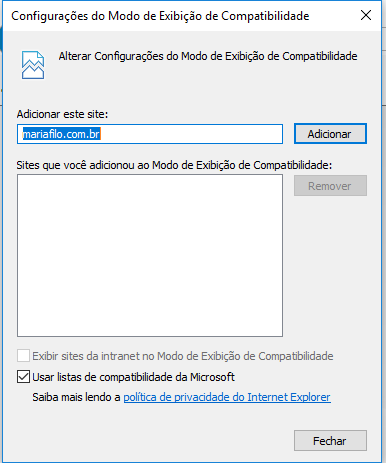
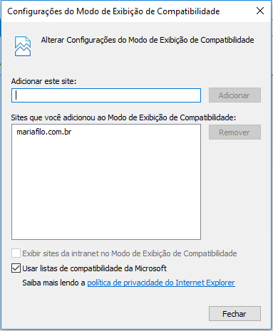
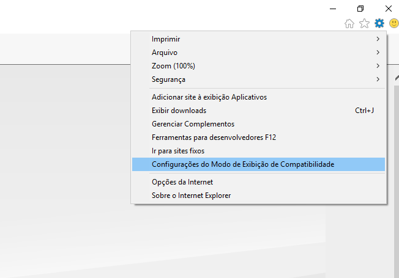

LinxWeb
Link de acesso
https://linx.mariafilo.com.br
 |
Utilize o navegador Internet Explorer pois é o navegador compatível com a página do LinxWeb. |
- Configuração do navegador Internet Explorer para acesso a página do LinxWeb
- Abrirá a tela: 
- Após adicionar o site a tela deve ficar dessa forma: 
Acesse Ferramentas (Alt+X) do navegador e clique na opção Configurações do Modo de Exibição de Compatibilidade
Clique no botão Adicionar para adicionar o site do LinxWeb ao modo de exibição de compatibilidade
Clique no botão Fechar
|
Após realizar o processo, feche o Internet Explorer e abra novamente. |